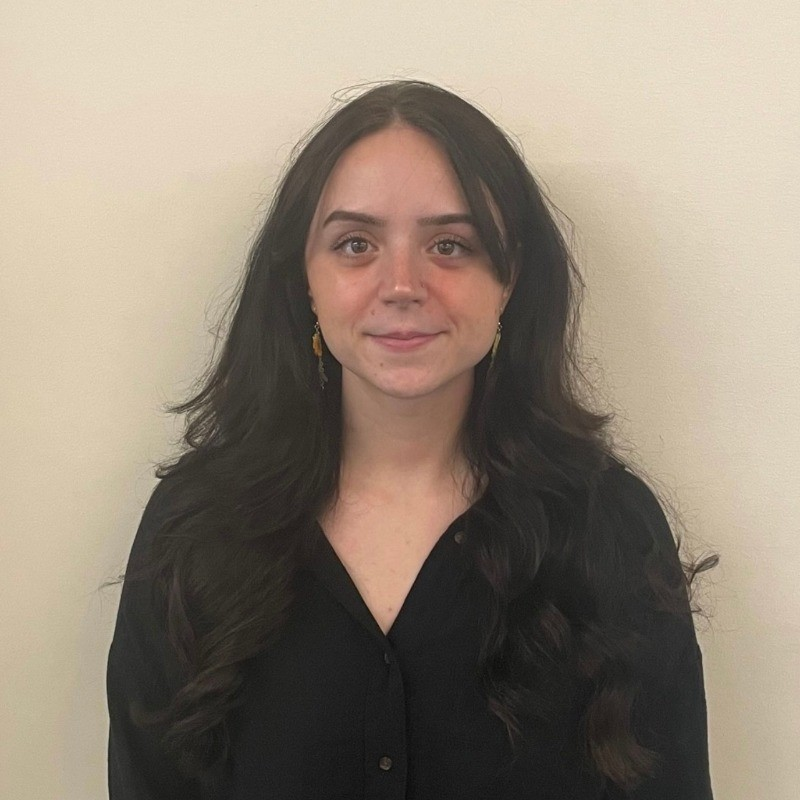

Sept 2019-May 2023
Graduated with a First Class Honors
Obtained a 3.74 GPA. Attended for a Semester
May 2025 - Present
Day to day troubleshooting with hardware and software issues. Working with Active Directory, Intune, JAMF, Oracle, etc.
Apr 2024 - April 2025
Implemented a new EFax making sure to follow HIPPA. Assisted in creating security policies and management with the migration into Intune. Directly worked with clients to troubleshoot IT problems and document them using a ticketing system. Also worked with SQL to create reporting services within the EHR.
May 2022 - April 2024
Direct communication with clients to troubleshoot IT issues ranging from security incidents to technical problems. Assisted with large scale projects; implementation of software ticketing system, knowledge base system for time management and workflow efficiencies.
January 2022 - May 2023
Conducted analysis on web app and internal/external network assessments. HTTP Security, Sensitive Data Exposure, and reviewed Logging and Monitoring. Adhered to ethical and professional standards to ensure the highest quality of care. Created infographics for security training.
July 2021 - May 2022
A placement year of implementing new equipment, cabling network topologies for SVS Engineers, installing/upgrading software across CISCO hardware. Installing virtual machines and operating systems for test beds use. I worked closely with SVS Engineers to create functioning test beds for customers.